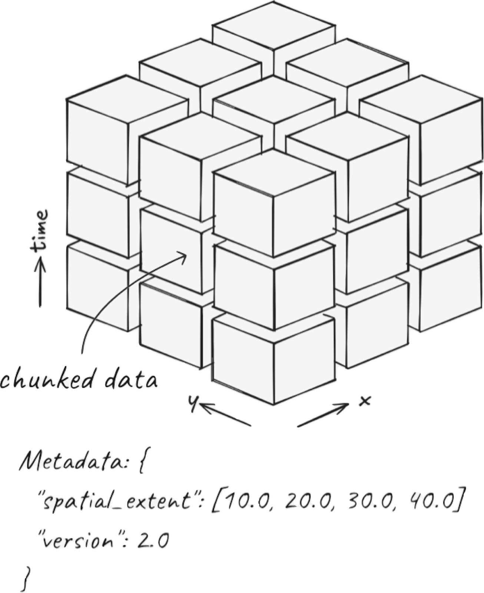

What is Zarr?#
Fig. 1 Credit: https://www.earthmover.io/blog/what-is-zarr.#
Much of the following text is based on more comprehensive descriptions of Zarr in zarr.dev and earthmover.io.
Zarr is a powerful open-source, cloud-native protocol for storing chunked, compressed N-dimensional arrays (Miles et al. 2026). It is designed for performance, interoperability and cloud computing or other parallel computing application. It enables high-throughput distributed I/O, allows concurrent read/write from multiple threads or processes. In a world where data is abundant, traditional data formats can become a bottleneck in a workflow - zarr removes that bottleneck.
Fig. 2 Zarr logo.#
Zarr is specifically designed for tensor data (a.k.a multi-dimensional arrays) rather than tabular data. In a Zarr, structured data are stored in a compact binary columnar (or chunked) layout, with encoding and compression appled to each chunk separately. In this way, it eliminates all possible redundant information and is an ‘array-native’ data system. These chunks are small, manageable pieces of a large array or arrays that can be read and written independently. Crucially, Zarr chunks must be uniform, fixed-size blocks and the user must choose how large chunks should be in each dimension. The chunk size definition strongly influences the performance of the Zarr for certain tasks - for time-series extraction, one would choose chunks that resemble towers (i.e. spanning many elements in the time-dimension but few in the horizontal dimensions), whereas if the aim is to optimise spatial operations, flatter chunks would be more performant. Each chunk is saved as a separate binary file and is organized using a nested directory structure depending on the chunk position. Zarr also uses structured metadata that enables rapid identification of the required chunk(s) and lazy loading of datasets.

Fig. 3 Zarr chunk cartoon.#
Working with Zarr#
A growing ecosystem of tools is developing alongside Zarr that make it easier to work with large datasets.
Xarray provides a high-level, labelled array interface that works seamlessly with Zarr. Where Zarr focuses on how data are stored, Xarray focuses on how it is accessed. It enhances raw Zarr arrays by adding coordinate labels, metadata and powerful slicing capabilities, which together make it ideal for many scientific datasets. Xarray also enables lazy loading of Zarr data, where only the metadata is read into memory along with small portions of the actual data as needed. This makes it ideal for working with arrays that would be too large to load into memory.
Dask brings parallelism and scalability to Zarr. Dask is a parallel and distributed computing library. In cloud computing or HPC environments, it allows maximization of computing resources to work on many Zarr chunks in parallel because it manages how chunks are distributed between workers.